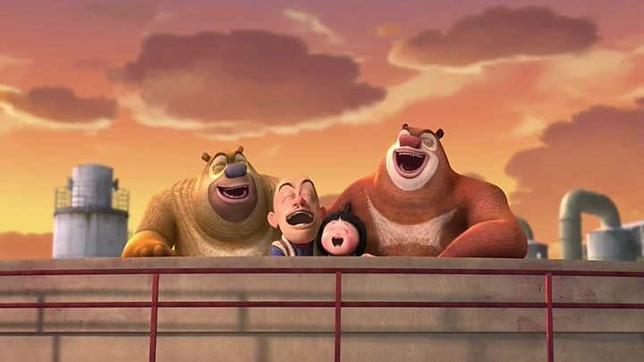
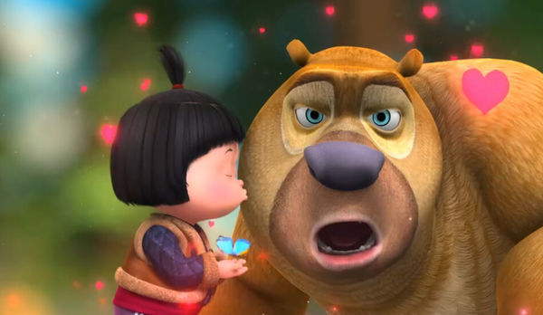

影片评价
虽然《熊出没之夺宝熊兵》中有诸多好莱坞经典动画的影子，比如小女孩的加入非常像《冰川时代1》中那个来到动物世界中的人类弃婴，再比如坐在轮椅上的爷爷这个角色，方形的脸庞显然是在模仿《飞屋环游记》中的气球销售员卡尔·弗雷德里克森等等；但是我们依然要给予这部影片一个很高的评价——它真的在好好编写一个故事。
而且这个评价是在两个背景下获得的，这就更不简单了。一个是《熊出没》的电视动画片从8月底被媒体曝出拥有过多语言行为暴力的负面新闻后，一直处在舆论的风口浪尖，笔者就曾批评过它用整人文化和低俗恶搞来博孩子眼球的做法，实际上从上到下有众多的眼睛都在盯着它的电影内容。另一个是，今年的“熊出没”大电影还只是这个系列的首部动画电影，相比那些有着两三部系列电影甚至五六部系列电影的作品来说，毫无电影经验的它能做出这样一个故事已经远超我的所想了。这实际上给中国动画电影的创作带来了希望，从模仿做起，把国际通用元素结合自己的形象和品牌，我们还是可以做出有国际范儿的作品来的。
当然，这部作品中还是有一点点内容上的行为暴力存在的，比如枪支的出现（虽然大部分时间内它们仅只是水枪），冲着人发射的烟花（这在春节临近时出现在大荧幕上，极容易被小朋友模仿），以及熊大和熊二在偷偷进入光头强家中时随意翻东西的情节，也是值得商榷的。虽然我们看到电视动画中的“臭狗熊”变成了电影中的“小熊熊”，但在安全性方面它还有很多没有解决的问题。
遗憾的是，最应该得到这份宝物的、老爷爷的那个自私和唯利是图的儿子，最终并没有得到这份宝物，虽然我相信每位观众看到老爷爷一直珍藏着他与儿子小时候的照片时，都毫无疑问充满了感动之情，但是导演并没有给这个“恶人”一个改过的机会。影片为了突出两只熊和光头强对小女孩无私的爱，把老爷爷留给小女孩但其实也算是留给儿子的宝物，生生夺走了。
所以我反复在思考“夺宝熊兵”这个“宝”究竟指的是什么？如果是被毫不相干的坏人掠去的代表天真纯洁的小女孩，那么夺回来是无可指摘的；而如果是人家的一份亲情或者一个做错了事的人改过自新的机会，那么夺回来是否太残忍了些呢？
而且这个评价是在两个背景下获得的，这就更不简单了。一个是《熊出没》的电视动画片从8月底被媒体曝出拥有过多语言行为暴力的负面新闻后，一直处在舆论的风口浪尖，笔者就曾批评过它用整人文化和低俗恶搞来博孩子眼球的做法，实际上从上到下有众多的眼睛都在盯着它的电影内容。另一个是，今年的“熊出没”大电影还只是这个系列的首部动画电影，相比那些有着两三部系列电影甚至五六部系列电影的作品来说，毫无电影经验的它能做出这样一个故事已经远超我的所想了。这实际上给中国动画电影的创作带来了希望，从模仿做起，把国际通用元素结合自己的形象和品牌，我们还是可以做出有国际范儿的作品来的。
当然，这部作品中还是有一点点内容上的行为暴力存在的，比如枪支的出现（虽然大部分时间内它们仅只是水枪），冲着人发射的烟花（这在春节临近时出现在大荧幕上，极容易被小朋友模仿），以及熊大和熊二在偷偷进入光头强家中时随意翻东西的情节，也是值得商榷的。虽然我们看到电视动画中的“臭狗熊”变成了电影中的“小熊熊”，但在安全性方面它还有很多没有解决的问题。

我认为这个故事是成功的，最重要的是它有画龙点睛的一笔，就是揭示出老爷爷在保险箱中为孤儿院的小女孩留下的“宝物”实际上是一份情感。如果没有这个点，那么整部影片依然会止步于戏谑和打闹的层面，是这份亲情让整部影片得到了升华，变得更有意义。
遗憾的是，最应该得到这份宝物的、老爷爷的那个自私和唯利是图的儿子，最终并没有得到这份宝物，虽然我相信每位观众看到老爷爷一直珍藏着他与儿子小时候的照片时，都毫无疑问充满了感动之情，但是导演并没有给这个“恶人”一个改过的机会。影片为了突出两只熊和光头强对小女孩无私的爱，把老爷爷留给小女孩但其实也算是留给儿子的宝物，生生夺走了。
所以我反复在思考“夺宝熊兵”这个“宝”究竟指的是什么？如果是被毫不相干的坏人掠去的代表天真纯洁的小女孩，那么夺回来是无可指摘的；而如果是人家的一份亲情或者一个做错了事的人改过自新的机会，那么夺回来是否太残忍了些呢？

《熊出没》说到底是一部男性主义的影片，里面不仅缺失女性角色，更缺失女性的光辉，比如一种协调、退让与容忍。表面上看是正义的“夺宝”，其实何尝不也是一种赤裸裸地出于男性本能的掠夺呢？因此从我的角度看，如果结尾儿子能有所悔悟，或许会是个更好的结局吧。
《熊出没》说到底是一部男性主义的影片，里面不仅缺失女性角色，更缺失女性的光辉，比如一种协调、退让与容忍。表面上看是正义的“夺宝”，其实何尝不也是一种赤裸裸地出于男性本能的掠夺呢？因此从我的角度看，如果结尾儿子能有所悔悟，或许会是个更好的结局吧。